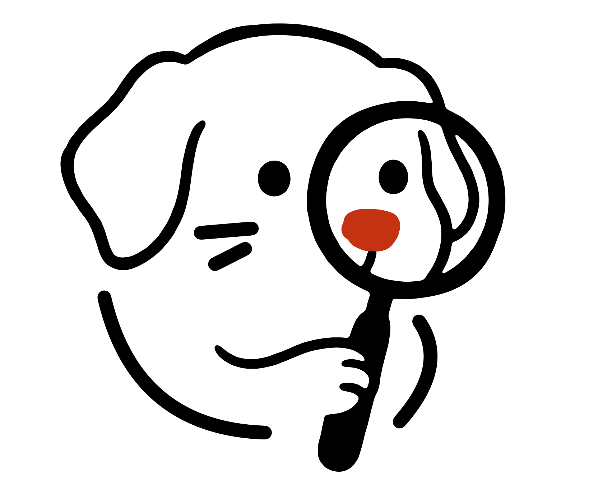
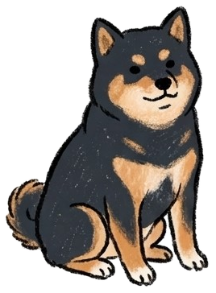

汪探
｜
WanTan
EP.02 · DOG VACCINES
狗狗疫苗
新手飼主篇
八合一、十合一，
到底差在哪？
打哪些、多久打一次，一次看懂。

2
個月大
3
劑疫苗
八合一跟十合一又差在哪裡
汪探
｜
WanTan
STEP 01 · 4 DISEASES
01
第一種病
狂犬病
人畜共通
·
台灣法律規定每年打
發病後幾乎都會死亡。台灣確診的動物主要是
鼬獾
，常見於山區；常去爬山、露營的狗狗要特別注意。
農業部狂犬病監測 · 2013–2025
鼬獾
累計超過 1,000 例
白鼻心等野生動物
也有確診
狗
1 隻
台灣確診的動物主要是鼬獾
汪探
｜
WanTan
STEP 03 · COMBO VACCINES
03
看懂幾合一
數字不同，
核心都一樣。
差別主要在鉤端螺旋體
和犬冠狀病毒。
三種核心疫苗
每一針都有
整理自台灣動物醫院衛教與寵物品牌資料；實際內容依產品而定
三種核心疫苗都有包含在內